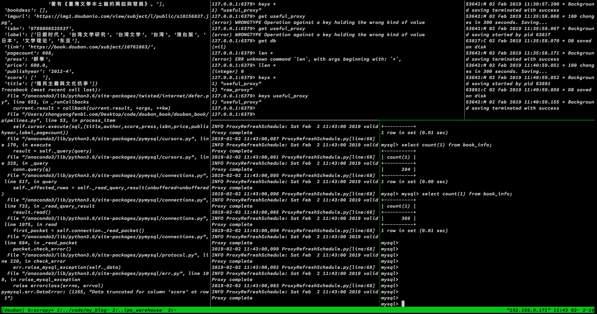

写在最前
18年3月刚来贵司实习的时候，jy就推荐了一些shell方面好用的工具，比如Iterm2,zsh,tmux之类的，还有14pt Source Code Pro Semibold Italic这款很好看的字体，autojump,the_sliver_seracher等神器。除了tmux，最开始体验的时候那反人类的复制滚屏模式劝退了我，其他用得不要太爽呀~
前几天觉得工作上需要在shell里面开的窗口越来越多了，得从工具上来一波更新，于是实战了一下tmux，这次感觉好多了，记录分享一下。
Tmux
tmux主要优点有下面三个：
- 强大的分屏支持: tmux窗口中，新开的pane，默认进入到之前的路径，如果是ssh连接，登录状态也依旧保持
- 保护现场 : 下班回家连上服务器就可以很快回到操作现场，简洁省事
- 会话共享 : 将tmux会话的地址分享给他人，这样他们就可以通过 SSH 接入该会话(我应该是用不到这个了）
安装tmux
在Mac上安装1
2
3
4 先安装Homebrew，有则跳过
ruby -e "$(curl -fsSL https://raw.githubusercontent.com/Homebrew/install/master/install)"
安装tmux
brew install tmux
在Linux上安装1
sudo apt-get install tmux
基本概念
session-window-pane:一个session有多个窗口，一个窗口有多个面板
多任务神器，用过就知道
直达使用
我们先创建一个名为local的session，用第一个命令即可1
2
3tmux new -s local # 创建一个名为local的session
tmux kill-session -t local # 关闭绘画
tmux kill-server #关闭服务器，所有会话被关闭
此时我们可以看到底部默认的小绿条，我理解这就是tmux的状态栏了嘛。tmux已经默认为我们创建好了一个window,这个时候就可以去执行切分pane之类的操作了。我这里随便举个栗子：1
2
3
4
5
6
7 默认所有操作都加了前缀，tmux的快捷键也都是加了前缀才会生效
, # 重命名当前window
- # 横切窗口，默认进入当前目录
| # 竖切窗口，默认进入当前目录
c # 新建window
hjkl # 切换窗口，类似vim操作
t # 显示时钟
我随便截图一下表示效果

tmux设置
这里直接附上我的.tmux.conf文件，不过基本也是来自网上大佬的1
2
3
4
5
6
7
8
9
10
11
12
13
14
15
16
17
18
19
20
21
22
23
24
25
26
27
28
29
30
31设置前缀为Ctrl + x
set -g prefix C-x
解除Ctrl+b 与前缀的对应关系
unbind C-b
up
bind-key k select-pane -U
down
bind-key j select-pane -D
left
bind-key h select-pane -L
right
bind-key l select-pane -R
绑定快捷键为r
bind r source-file ~/.tmux.conf \; display-message "Config reloaded.."
unbind '"'
bind - splitw -v -c '#{pane_current_path}' # 垂直方向新增面板，默认进入当前目录
unbind %
bind | splitw -h -c '#{pane_current_path}' # 水平方向新增面板，默认进入当前目录
绑定Ctrl+hjkl键为面板上下左右调整边缘的快捷指令
bind -r ^k resizep -U 5 # 绑定Ctrl+k为往↑调整面板边缘10个单元格
bind -r ^j resizep -D 5 # 绑定Ctrl+j为往↓调整面板边缘10个单元格
bind -r ^h resizep -L 5 # 绑定Ctrl+h为往←调整面板边缘10个单元格
bind -r ^l resizep -R 5 # 绑定Ctrl+l为往→调整面板边缘10个单元格
开启鼠标
set-option -g mouse on
这里要感恩网上大佬分享的教程Tmux使用手册
写在最后
复制滚屏模式直到现在都还有点不习惯，不过还好开启了鼠标支持，后面再来吐槽。